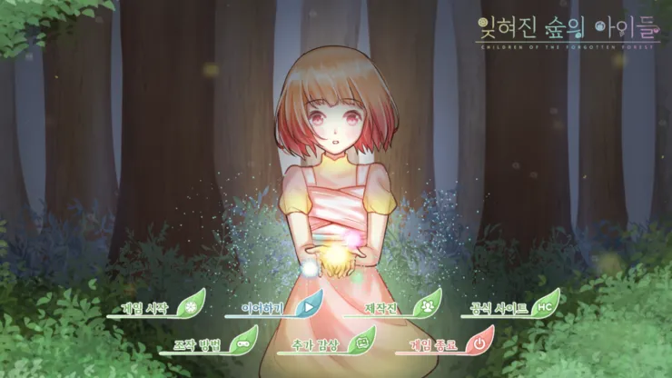
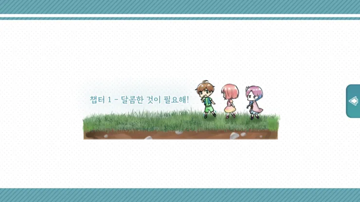
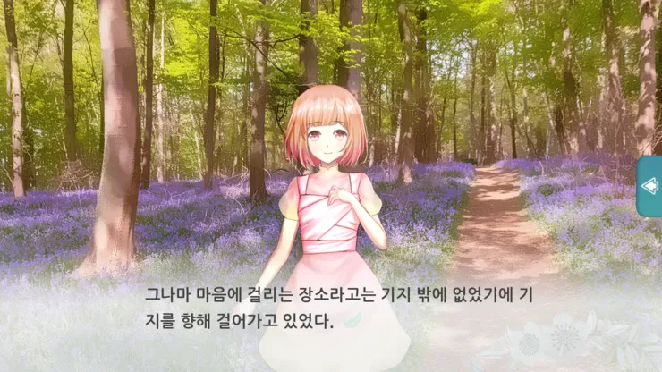
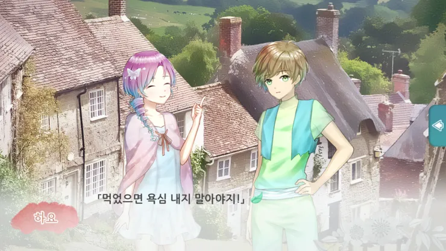
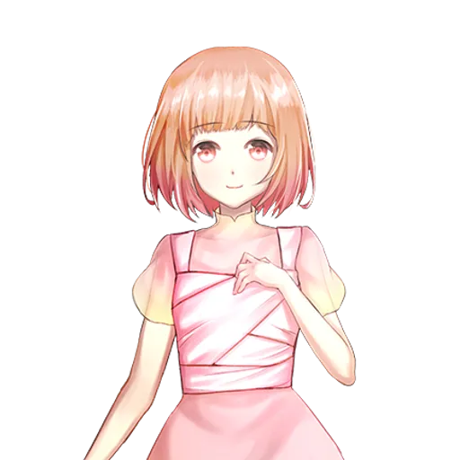
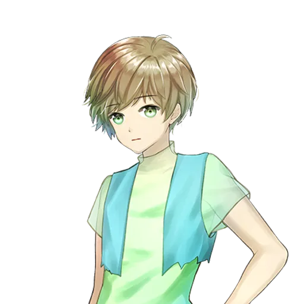
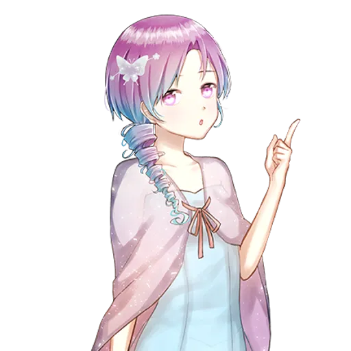

프로젝트 20 · 발매일 미정
요정들이 살아가는 숲속 이야기.
사탕수수 하나에서 시작된 작은 모험.
날개는 별빛처럼 빛나며, 눈망울은 새벽의 이슬보다 반짝이는 요정들. 세상은 그들을 요정이라 부른다. 어디에나 존재하며 모두가 조화를 이룰 수 있게 만드는 존재. 그런데 지금, 세 명의 요정이 사탕수수 하나를 놓고 싸우고 있다. 사탕수수 하나에서 시작된 작은 모험. 기지를 만들고, 야생 사탕수수를 찾아 떠나고, 거미를 잡으러 거미굴까지. 먹보 수와 고지식한 에요, 그리고 리더인 하요가 만들어가는 숲속 이야기.
요정들의 좌충우돌 모험담이 지금 시작됩니다. 메인화면은 플레이 시각에 따라 변화하는 특징이 있습니다.

사탕수수는 빨리 변질되기 때문에 오래 보관할 수 있는 설탕으로 정제한다. 장작과 사탕수수, 그리고 레몬이 필요하다. 끓이고, 저어주고, 식히는 것까지. 설탕 하나 만드는 데도 많은 노력이 든다.

흙으로 만들까, 나무로 만들까. 풀로 꾸밀까. 기지를 만드는 방법은 다양하다.

야생 사탕수수는 자기가 나고 싶은 곳에서 난다. 재배 사탕수수보다 당도가 높지만 찾기 어렵다. 오목눈이 군락지에서는 오목눈이에게 사탕수수를 빼앗기지 않기 위해 거미와 교환해야 한다.

어디에서 굴러왔는지 모르는 상자. 눈과 입이 달려 있고, 잘 굴러다닌다. 곤란한 요정을 도와주는 존재. 처음에는 말투가 이상했지만 나중에는 유창해진다. 만능 채집기를 팔기도 한다.
이야기를 이끌어가는 인물들.

사탕수수를 정제하기 위해 기지를 만들고, 야생 사탕수수를 찾아 나선다. 예요에게 특이하다는 이야기를 듣는다.

음식에 욕심이 많은 요정. 이름은 자주 쓰는 "~수 없어"에서 따왔다는 이야기가 있지만 원래는 으뜸을 의미한다고 한다. 사탕수수 하나를 놓고 하요와 싸울 정도로 음식에 진심이다.

고지식한 성격의 요정. "~인 거에요"라는 특유의 말투를 쓴다. 사탕수수는 기호품일 뿐이라며 초콜릿을 더 좋아한다. 요정은 조화를 이뤄야 한다는 신념을 가지고 있다. 설탕 정제 방법을 알고 있는 지식인.
사탕수수 하나에서 시작된 요정들의 작은 모험.
설명 내용이 여기에 들어간다.